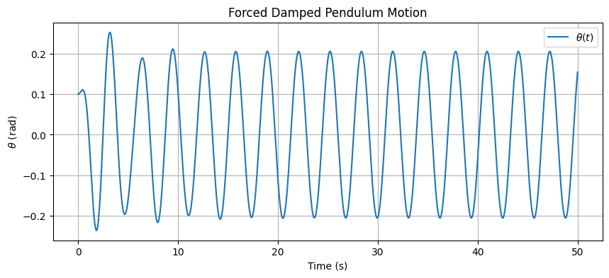
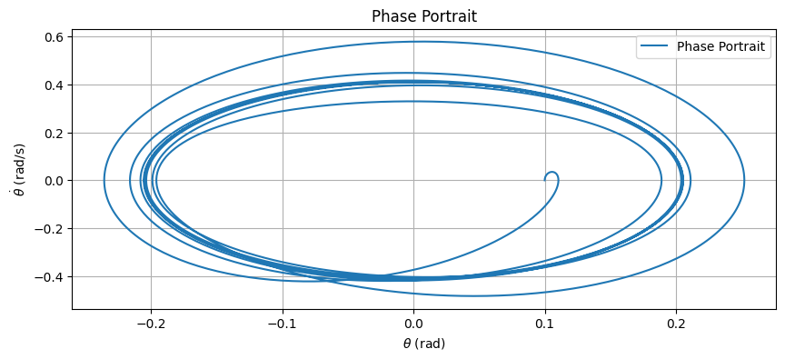
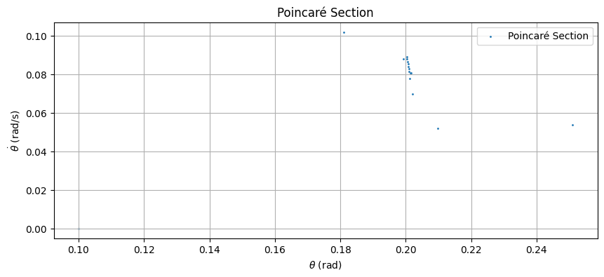

Problem 2: Forced Damped Pendulum Physics Lab
Theoretical Foundation
Differential Equation and Small-Angle Approximation
The motion of a forced damped pendulum is governed by the following differential equation:
Where:
- \(\theta\) is the angular displacement,
- \(b\) is the damping coefficient,
- \(g\) is the acceleration due to gravity (\(9.81 \, \text{m/s}^2\)),
- \(L\) is the length of the pendulum,
- \(A\) is the amplitude of the external driving force,
- \(\omega\) is the driving frequency,
- \(t\) is time.
For small-angle oscillations (\(\theta \ll 1\)), we can approximate \(\sin\theta \approx \theta\), simplifying the equation to a linear form:
This is a second-order linear differential equation with a periodic driving term. The homogeneous solution (without the driving force) is:
Where \(\omega_0 = \sqrt{\frac{g}{L} - \left(\frac{b}{2}\right)^2}\) is the damped natural frequency, and \(C_1, C_2\) are constants determined by initial conditions. The particular solution (due to the driving force) takes the form:
Substituting into the differential equation and solving for \(B\) and \(C\), we find the steady-state amplitude depends on the driving frequency \(\omega\). The total solution is:
Resonance Conditions and Energy Implications
Resonance occurs when the driving frequency \(\omega\) approaches the natural frequency \(\omega_n = \sqrt{\frac{g}{L}}\). The amplitude of oscillation peaks at resonance, and the energy transfer from the driving force to the pendulum is maximized. The resonance frequency shifts slightly due to damping:
At resonance, the system absorbs energy efficiently, but damping dissipates energy as heat, limiting the amplitude growth. For low damping (\(b \to 0\)), the amplitude can grow significantly, while high damping suppresses the resonance peak.
2. Analysis of Dynamics
Influence of Parameters
- Damping Coefficient (\(b\)): Higher damping reduces the amplitude of oscillations and shifts the system toward overdamped behavior (\(b^2 > 4\omega_n^2\)). Low damping allows sustained oscillations and sharper resonance.
- Driving Amplitude (\(A\)): Increasing \(A\) linearly increases the steady-state amplitude of oscillations.
- Driving Frequency (\(\omega\)): When \(\omega \approx \omega_n\), resonance amplifies the motion. Far from resonance, the pendulum oscillates at the driving frequency with reduced amplitude.
Transition to Chaotic Motion
For large driving amplitudes or specific frequencies, the system can exhibit chaotic behavior due to the nonlinearity of \(\sin\theta\). Chaos arises when the pendulum undergoes period-doubling bifurcations, leading to unpredictable motion. This can be observed in phase portraits (plots of \(\theta\) vs. \(\frac{d\theta}{dt}\)) and Poincaré sections (snapshots of the phase space at intervals of the driving period).
3. Practical Applications
The forced damped pendulum model applies to several real-world scenarios:
- Energy Harvesting Devices: Piezoelectric devices can use oscillatory motion (similar to a forced pendulum) to convert mechanical vibrations into electrical energy, such as in wearable tech or structural monitoring.
- Suspension Bridges: Bridges experience wind-induced oscillations, modeled as forced damped systems, where damping prevents catastrophic resonance (e.g., Tacoma Narrows Bridge collapse).
- Oscillating Circuits: In electrical engineering, RLC circuits behave analogously to a forced damped pendulum, with applications in signal processing and tuning.
4. Implementation
Computational Model
Below is a graph that simulated the forced damped pendulum using the Runge-Kutta 4th-order (RK4) method, which handles the nonlinear \(\sin\theta\) term accurately. The script plots the time series, phase portrait, and Poincaré section.



5. Limitations and Extensions
Model Limitations
The forced damped pendulum model, while insightful, has several limitations that affect its applicability to real-world systems:
-
Small-Angle Approximation (\(\sin\theta \approx \theta\)): The linear approximation simplifies the differential equation by assuming \(\sin\theta \approx \theta\), which holds only for small angular displacements (\(\theta \ll 1\)). For large oscillations, this assumption underestimates the nonlinear effects of the \(\sin\theta\) term, leading to inaccuracies in predicting the pendulum's behavior, especially in regimes where chaotic motion or large-amplitude swings occur.
-
Linear Damping Assumption (\(b \frac{d\theta}{dt}\)): The model assumes damping is linearly proportional to the angular velocity, represented by the term \(b \frac{d\theta}{dt}\). In reality, damping in physical systems often exhibits nonlinear behavior, such as quadratic drag (proportional to \(\left(\frac{d\theta}{dt}\right)^2\)) experienced by objects moving through air or other fluids. This simplification can lead to discrepancies in energy dissipation rates, particularly for high velocities.
-
Periodic Driving Force (\(A \cos(\omega t)\)): The external forcing term in the model is a simple harmonic function, \(A \cos(\omega t)\), which assumes a single-frequency, periodic drive. Real-world systems often experience more complex forces, such as stochastic (random) forces from environmental noise or multi-frequency driving from multiple sources. This limitation restricts the model's ability to simulate realistic scenarios where forces are not purely periodic.
Potential Extensions
To address these limitations and enhance the model's applicability, the following extensions can be explored:
-
Introduce Nonlinear Damping: Incorporating nonlinear damping, such as quadratic drag (\(\propto \left(\frac{d\theta}{dt}\right)^2\)), would better model air resistance and other velocity-dependent forces in real systems. This could be implemented by modifying the damping term in the differential equation to \(b \frac{d\theta}{dt} + c \left(\frac{d\theta}{dt}\right)^2\), where \(c\) is a coefficient for quadratic damping. Such an extension would improve accuracy for large oscillations and high velocities.
-
Use Non-Periodic Driving Forces: Replacing the periodic driving force \(A \cos(\omega t)\) with non-periodic or stochastic forces would allow the model to simulate real-world conditions more effectively. For example, adding a random noise term or a superposition of multiple frequencies (\(A_1 \cos(\omega_1 t) + A_2 \cos(\omega_2 t)\)) could mimic environmental perturbations, such as wind gusts or mechanical vibrations, providing a more realistic representation of external influences.
-
Incorporate Multi-Degree-of-Freedom Systems: Extending the model to include multi-degree-of-freedom systems, such as coupled pendulums, would enable the study of collective dynamics and interactions between multiple oscillatory components. For instance, two pendulums connected by a spring could exhibit synchronization or chaotic behavior, offering insights into complex systems like coupled oscillators in physics, biology (e.g., neural networks), or engineering (e.g., power grids).